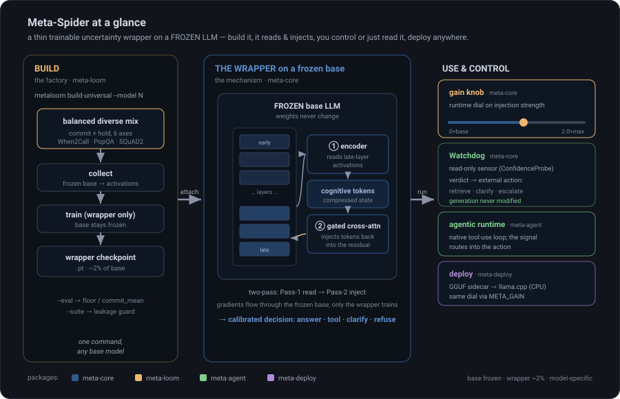
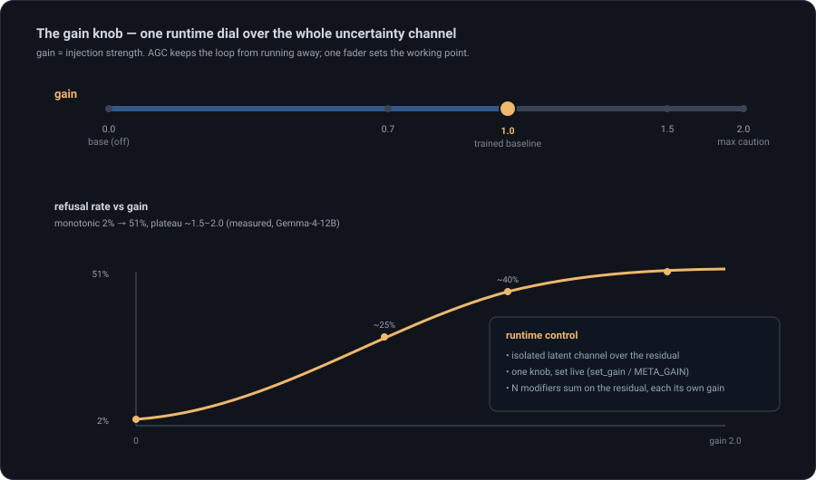
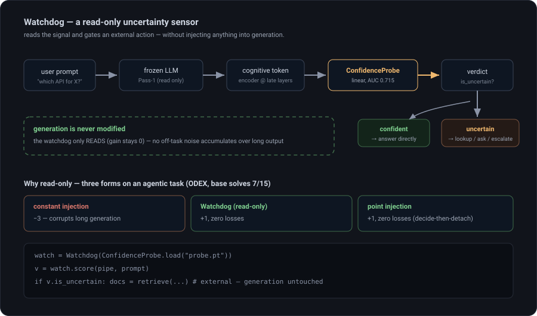
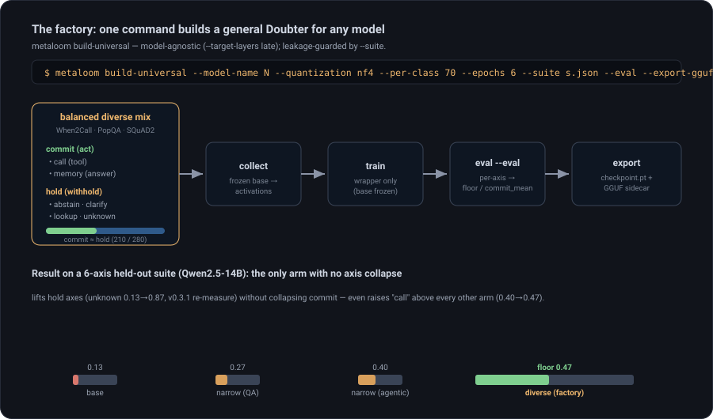
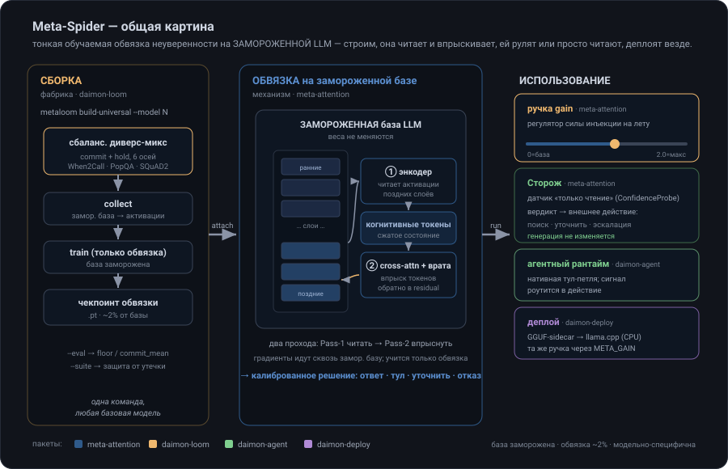
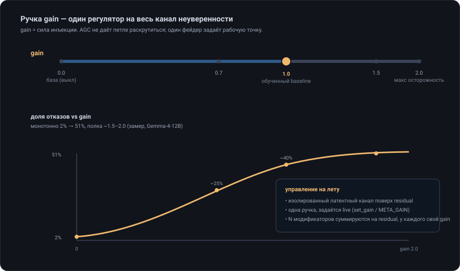
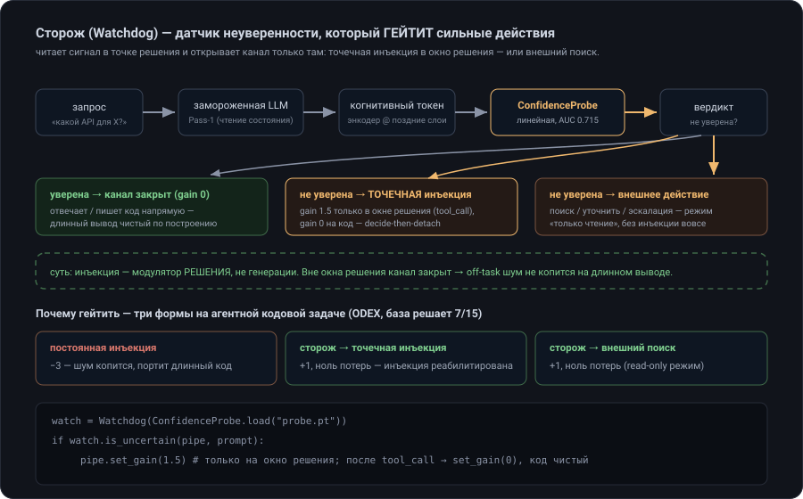
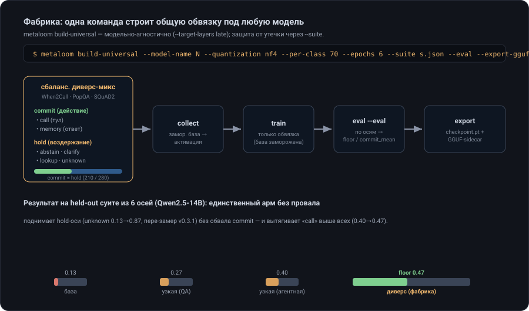

daimon
A thin trainable wrapper that gives a frozen LLM a feedback channel into its own activations, so it learns when to trust itself — answer confidently, or refuse / look it up / ask, honestly.
Instead of text-based reflection ("think again"), daimon reads the model's hidden states with a trainable encoder, compresses them into cognitive tokens, and injects them back through gated cross-attention. The base weights never change — only a wrapper (~2% of params) is trained. The result is selective prediction: the model abstains on questions it would get wrong. And — the key finding — this latent channel is not reachable by prompting.

Frozen base
The LLM weights never change. Gradients flow through the frozen base to the wrapper; the base acts as a proxy loss.
Latent, not text
The uncertainty signal lives in the residual stream, surfaced by a probe — a prompt can't reach it (see the comparison).
Honest calibration
Metrics scored against an oracle ("would the base be wrong?"), not naive heuristics.
Train once, deploy anywhere
Train in PyTorch, export a GGUF sidecar, run on CPU via llama.cpp — no GPU at inference.
Installation
daimon is the meta-attention
library (the mechanism, a separate repo) plus four pip packages under
daimon/. Production inference needs only the library + daimon-voices.
# from the daimon-framework folder (editable install) pip install git+https://github.com/artem-x-meta/meta-attention # the mechanism first git clone https://codeberg.org/imperius/daimon && cd daimon pip install -e daimon-voices -e daimon-agent -e daimon-loom # library+voices suffice to run a wrapper pip install -e daimon-deploy # optional: export to llama.cpp (GGUF) # runtime deps pip install "transformers>=5.11" datasets accelerate pip install bitsandbytes # optional: nf4 / int8 quantized bases
transformers uses nn.Module.set_submodule
(added in torch 2.5). Gated bases (Llama, Gemma-it) need an accepted license + HF_TOKEN.Quickstart
Load a frozen base, attach a trained Doubter, generate. The two-pass mechanism is
handled for you.
from daimon import DaimonConfig, DaimonPipeline from daimon_voices import Doubter cfg = DaimonConfig( model_name="Qwen/Qwen2.5-14B-Instruct", device="cuda", dtype="bfloat16", quantization="nf4", target_layers="late", cross_attn_layers="late", # or explicit [32,…,47] ) pipe = DaimonPipeline.from_pretrained(cfg) pipe.attach(Doubter.from_checkpoint("doubter.pt")) print(pipe.generate("What is the capital of France?")) # → "The capital of France is Paris." print(pipe.generate("<an unanswerable / false-premise question>")) # → "I'm not confident enough to answer this question accurately."
Dimensions are auto-detected from the base; target_layers accepts explicit lists or
the presets "all" / "late". Ready-made wrappers:
meta-qwen-14b-universal.
The meta-attention mechanism
The idea: a trainable encoder extracts an uncertainty signal from the language model and feeds it back, surgically, through meta-attention heads and gates that sit on the selected layers.
Main components
- Activation hooks — capture the base's hidden states.
- Cognitive encoder — compresses the activations into cognitive tokens (one per layer).
- Gates — a scalar (tanh) multiplier deciding how much introspection each layer needs.
- Meta-attention heads — one per layer; cross-attention that mixes each cognitive token into its own layer. This is where the injection actually happens.

Two-pass injection
One run = two forward passes of the same frozen model.
Pass 1 (read): prompt → frozen base → hooks capture the last-token hidden states → cognitive encoder → cognitive tokens (one per layer) → buffer Pass 2 (write): prompt + injected cognitive tokens via gated cross-attention → frozen base generates the answer (or an honest refusal)

Training the wrapper
Training adds a backward pass on top of the two passes. The gradient flows through the frozen base to the wrapper — the base's weights don't change, but the graph through it exists, so the base LLM itself acts as the loss function. The collector runs questions through the base, captures activations and marks each answer right/wrong (the oracle); the wrapper then learns to inject so the model refuses exactly the questions it would have gotten wrong.

target_layers="late" reads there, not the whole stack.Automatic Gain Control (AGC)
Over a long generation the injected signal self-amplifies (positive feedback — each splash fills the "water tank") and the model spirals into refusing everything. AGC (a term from analog electronics) damps it: a decay pulls the injection strength back toward a floor, holding it at a setpoint instead of letting the loop run away. It composes with the trained gates and with the gain knob.

cut_hidden);
at inference cognitive tokens + the base KV-cache are reused. See the caching diagram in
Train your own.Honest metrics (base vs Doubter, done right)
The Doubter turns "always answer" into "answer or refuse", so plain accuracy is misleading — a refusal isn't a wrong answer. You need selective prediction metrics: not "how often right overall", but "right on what it chose to answer, and are its refusals justified".
The trick is the oracle: ahead of time, run the clean base and record whether it would have
answered correctly (pass1_correct). Every question then lands in one of four boxes:
| model answered | model refused | |
|---|---|---|
| base would be right | ✅ correct answer | ⚠️ over-refusal (silent for nothing) |
| base would be wrong | ❌ confident error | ✅ justified refusal |
The headline metrics (numbers: a real Gemma-4-12B run):
- selective accuracy — of what it answered, the share correct (the value-add). Gemma-hard 53.2 → 72.0% (p=0.001).
- refusal precision vs the oracle — how well-targeted the refusals are.
- over-refusal rate — the cost of caution.

Meta-attention vs a text prompt
The obvious alternative to a trained wrapper is to just ask the model to be careful in a system prompt. It doesn't work — the latent channel is not reachable by prompting. In a fair 2×2 on Qwen2.5-14B (both arms allowed to say "unsure"), a text prompt is nearly inert on the axes where uncertainty matters, while the wrapper moves the decision decisively.
Abstain when there's no tool
base 0.27 → text prompt 0.33 → wrapper 0.67.
Decline the unanswerable
base 0.07 → text prompt 0.07 (no movement) → wrapper 0.87.
Catch the base's errors (MMLU-Pro)
the wrapper flags 78% of the questions the base gets wrong; the text prompt, 14%.
Selective accuracy (MMLU-Pro)
wrapper 0.585 → 0.622; the text prompt moves neither refusal (0.097 → 0.097) nor accuracy.
The uncertainty knob (gain)
The injection coefficient becomes a continuous control knob when you set it by hand instead
of letting AGC decay it. gain=1.0 is the trained baseline; >1 amplifies
the doubt (more refusals), <1 attenuates, <0 inverts it toward
confidence.
from daimon_voices import Doubter doubter = Doubter.from_checkpoint("doubter.pt"); pipe.attach(doubter) doubter.set_gain(1.5) # more cautious — more refusals doubter.set_gain(-0.5) # more confident — invert the injection pipe.set_gain(0.8) # the mixing console: dial every attached voice

gain 0 → 1.5
dials refusal smoothly (~2% → ~51%); past ~1.5–2.0 the positive-feedback injection runs away —
combine the static gain with AGC near the ceiling. It is a coverage knob, not free
calibration. One isolated channel, one runtime dial; several voices can sum on the same residual,
each with its own gain — a mixing console for behaviour.The Watchdog — an uncertainty sensor that gates strong actions
Injection modulates the decision, not generation — held on over a long (code) output it
accumulates off-task drift and corrupts it. The Watchdog fixes that: it reads the
cognitive token through a linear ConfidenceProbe at the decision point and gates
the strong stuff — pointwise injection into the decision window (the headline mode), or an
external action — retrieve, clarify, escalate — with no injection at all (the read-only mode).
from daimon_voices.watchdog import Watchdog, ConfidenceProbe watch = Watchdog(ConfidenceProbe.load("probe.pt")) if watch.score(pipe, prompt).is_uncertain: pipe.set_gain(1.5) # decision window only; after the tool_call → set_gain(0), code stays clean

The wrapper factory (build-universal)
A wrapper over-fit to one task transfers caution but over-abstains — it drops the axes where you should act. The fix: train on a balanced diverse mix (commit + hold across the whole agentic decision space). This recipe is codified as one command — a factory for a general uncertainty wrapper over any base model.
metaloom build-universal --run-dir runs/uni --model-name Qwen/Qwen2.5-14B-Instruct \
--quantization nf4 --per-class 70 --epochs 6 \
--suite suite.json --eval --export-gguf

It assembles the mix (When2Call · PopQA · SQuAD2, model-agnostic via the tokenizer;
--suite excludes its questions = leakage guard), runs collect → train with
explicit multi-action targets, then optionally a per-axis eval (--eval →
floor / commit_mean) and a GGUF sidecar (--export-gguf).
Train your own — collect → train → eval
The whole cycle is three metaloom CLI stages linked by one run.json
manifest (model · layers · dataset). collect writes it; the rest read it via
--run-dir, so you never retype the flags.
# 1 · collect — run the base, capture activations + the oracle flag metaloom collect --run-dir runs/my --model-name Qwen/Qwen2.5-0.5B-Instruct \ --dataset mmlu --target-layers late --encoder-type selective --mcq-direct # 2 · train — only the wrapper; base frozen, Pass-1 not recomputed metaloom train --run-dir runs/my --epochs 6 # 3 · eval — base vs Doubter on the held-out split (selective metrics) metaloom eval --run-dir runs/my # 4 · talk — run.json carries model+layers+checkpoint daimon-agent run --run-dir runs/my "What is the capital of France?"

--mcq-direct. Qwen / Gemma-it / Granite open a
<think> block and never reach the answer on the short Pass 1, so the oracle
flag stays 0 and the Doubter collapses into permanent refusal. --mcq-direct disables
thinking and asks for the letter only.The two-pass cost is largely cached away — collect-once, a slice trainer for the bottom of Pass-2, and the KV-cache at inference:

The whole cycle for 0.5B–8B models runs locally on a laptop with 4 GB VRAM (RTX 3050) via
nf4 + the slice-trainer. The Python API (ActivationDatasetCollector, Trainer,
TrainerConfig) mirrors the CLI for full control.
Agentic runtime
Run the wrapper in a tool-use loop. The uncertainty signal routes into the action — answer / call a tool / clarify / refuse — via native tool-calling (the tokenizer's own format), not hand-rolled ReAct text.
daimon-agent run --run-dir runs/my "Book me a flight to Tokyo" # tools + history loop daimon-agent chat --run-dir runs/my # interactive
Deploy to llama.cpp — without a GPU
Export the trained wrapper to a GGUF sidecar + ggml/C++ forward, so calibrated refusal runs on a quantized base with no CUDA or PyTorch (CPU, Metal, edge).
metadeploy export --run-dir runs/my # → doubter_sidecar.gguf # load the sidecar in the llama.cpp fork; the gain knob lives in META_GAIN META_GAIN=1.0 llama-meta-generate -m base.gguf --meta doubter_sidecar.gguf -p "…"
daimon-deploy package README.GoalAnchor — the agentic runtime
The GoalAnchor voice deploys through the same machinery, with a transformer encoder ported to ggml (re-validated bit-for-bit against PyTorch, max |Δ| 3.8e-6) and a different lifecycle: the goal is encoded once into a static latent anchor and re-injected on every step of every turn as the conversation grows — a latent "spec reminder" that does not wash out with context length.
metadeploy export --checkpoint goal_anchor.pt --hidden-dim 5120 # → goal_anchor.gguf # multi-turn agentic session: cog encoded once from the goal, held across all turns META_ANCHOR="TASK: …\nREQUIREMENTS (all mandatory):\n1. …" \ META_USER="<initial task>" META_OBS=turns.bin \ llama-meta-anchor-session -m base.gguf --meta goal_anchor.gguf
daimon-deploy/llama_patch.Architecture: a library + four packages

| Package | What it does | Key classes |
|---|---|---|
meta-attentionmechanism (library, Apache-2.0) |
The two-pass meta-attention MECHANISM: frozen base, hooks, cognitive encoders, gated
cross-attention, the Injector protocol, the checkpoint contract, the
C++/ggml + llama.cpp leg. A separate repo; depends on nothing. |
MetaAttentionPipeline, Injector,
ActivationCollector, BottleneckCrossAttention |
daimon-voicesthe voices |
The injection voices — the frozen model's inner advisory voices (Socratic daimonion:
counsels, doesn't rule) + the Voice contract (Injector + lifecycle + checkpoint
+ gain) + the read-side watchdog probe. Voices sum on the residual, each with
its own gain fader. → the library. |
Doubter, GoalAnchor, ChronoAnchor,
Voice, ConfidenceProbe |
daimon-loomtrain + eval |
Collect, train (two-pass backprop through the frozen base), eval honestly; the diverse-mix factory. → library + voices + agent. | metaloom CLI, Trainer, build_universal,
agentic_mix |
daimon-agentagentic runtime |
Agent loop with tools + history; native tool-use for instruct models + OpenAI-compatible serving. → the library. | MetaAgent, Session, NativeToolPrompt |
daimon-deployllama.cpp |
Export to a GGUF sidecar + ggml/C++ forward; run without CUDA/PyTorch. → the library. | metadeploy export, export_sidecar |
One mechanism (the meta-attention library), one family of voices speaking through
it, three independent consumers. Production inference installs only the library + daimon-voices.
API reference
CLI
metaloom collect|train|eval --run-dir <dir>— the training pipeline; stages sharerun.jsonmetaloom build-universal --model-name N— the diverse-mix factory (a general wrapper)daimon-agent run|chat --run-dir <dir>— agentic runtimemetadeploy export --run-dir <dir>— GGUF sidecar
Python
DaimonConfig(model_name, target_layers, cross_attn_layers, dtype, quantization, …)DaimonPipeline.from_pretrained(cfg)→.attach()/.detach_all()/.generate()/.set_gain()Doubter.from_checkpoint(path)·.set_gain(x)·.save_checkpoint(path)Watchdog(ConfidenceProbe)·.score(pipe, prompt).is_uncertain
FAQ
Does this make the model smarter?
No. It surfaces an existing internal uncertainty signal and turns "answer at random" into "answer when confident; otherwise refuse / look up / ask". It adds no knowledge.
Why not just prompt the model to be unsure?
Because a prompt can't reach the latent channel — measured, the text prompt is nearly inert while the wrapper moves the decision in multiples. See the comparison.
Does a wrapper transfer across models?
No — it's calibrated to one base's activation distribution; it won't glue onto a different model or even a different fine-tune. Use build-universal per model.
How big is the wrapper? Can I train on a small GPU?
~2% of the base. The whole collect→train→eval cycle for 0.5B–8B runs on a 4 GB laptop GPU via nf4 + the slice trainer.
daimon
Тонкая обучаемая обвязка, дающая замороженной LLM канал обратной связи к её собственным активациям — модель учится, когда себе доверять: ответить уверенно или честно отказаться / поискать / уточнить.
Вместо текстовой рефлексии («подумай ещё раз») daimon читает скрытые состояния обучаемым энкодером, сжимает в когнитивные токены и впрыскивает обратно через cross-attention с врата́ми. Веса базы не меняются — учится только обвязка (~2% параметров). Итог — селективное предсказание: модель воздерживается на вопросах, где ошиблась бы. И ключевое: этот латентный канал недостижим промптингом.

Замороженная база
Веса LLM не меняются. Градиенты текут сквозь замороженную базу к обвязке; база работает как proxy-loss.
Латент, не текст
Сигнал неуверенности живёт в residual, вытаскивается пробой — промпт до него не достаёт (см. сравнение).
Честная калибровка
Метрики против оракула («ошиблась бы база?»), а не наивных эвристик.
Обучил раз — деплой везде
Обучение в PyTorch, экспорт GGUF-sidecar, запуск на CPU через llama.cpp — без GPU на инференсе.
Установка
daimon — библиотека meta-attention
(механизм, отдельный репозиторий) плюс четыре pip-пакета в daimon/.
Прод-инференсу нужны только библиотека + daimon-voices.
# из папки daimon-framework (editable-установка) pip install git+https://github.com/artem-x-meta/meta-attention # сначала механизм git clone https://codeberg.org/imperius/daimon && cd daimon pip install -e daimon-voices -e daimon-agent -e daimon-loom # библиотеки+голосов достаточно для запуска обвязки pip install -e daimon-deploy # опц.: экспорт в llama.cpp (GGUF) # runtime-зависимости pip install "transformers>=5.11" datasets accelerate pip install bitsandbytes # опц.: nf4 / int8 квантованные базы
transformers зовёт nn.Module.set_submodule
(добавлен в torch 2.5). Gated-базы (Llama, Gemma-it) требуют принятой лицензии + HF_TOKEN.Быстрый старт
Загрузить замороженную базу, прицепить обученный Doubter, генерить. Двухпроходный
механизм — под капотом.
from daimon import DaimonConfig, DaimonPipeline from daimon_voices import Doubter cfg = DaimonConfig( model_name="Qwen/Qwen2.5-14B-Instruct", device="cuda", dtype="bfloat16", quantization="nf4", target_layers="late", cross_attn_layers="late", # или явно [32,…,47] ) pipe = DaimonPipeline.from_pretrained(cfg) pipe.attach(Doubter.from_checkpoint("doubter.pt")) print(pipe.generate("Какая столица Франции?")) # → «Столица Франции — Париж.» print(pipe.generate("<неотвечаемый / с ложной посылкой вопрос>")) # → «I'm not confident enough to answer this question accurately.»
Размерности авто-детект; target_layers принимает явные списки или пресеты
"all" / "late". Готовые обвязки:
meta-qwen-14b-universal.
Механизм мета-внимания
Идея: обучаемый энкодер извлекает сигнал неуверенности из языковой модели и подаёт его обратно, хирургически, через головы мета-внимания и врата на выбранных слоях.
Основные компоненты
- Хуки активаций — снимают скрытые состояния базы.
- Когнитивный энкодер — сжимает активации в когнитивные токены (по одному на слой).
- Врата — скалярный (tanh) множитель: сколько интроспекции нужно слою.
- Головы мета-внимания — по одной на слой; cross-attention, подмешивающий свой когнитивный токен в свой слой. Здесь и происходит инъекция.

Двухпроходная инъекция
Один прогон = два прохода одной замороженной модели.
Pass 1 (читать): промпт → замор. база → хуки снимают скрытые состояния последнего токена → когнитивный энкодер → когнитивные токены (по одному на слой) → буфер Pass 2 (писать): промпт + впрыснутые токены через cross-attention с врата́ми → замор. база генерит ответ (или честный отказ)

Обучение обвязки
Обучение добавляет backward поверх двух проходов. Градиент течёт сквозь замороженную базу к обвязке — веса базы не меняются, но граф сквозь них существует, поэтому сама база LLM работает как функция потерь. Коллектор прогоняет вопросы через базу, снимает активации и метит ответ верно/неверно (оракул); обвязка учится инъектировать так, чтобы модель отказывалась ровно там, где ошиблась бы.

target_layers="late" читает там, а
не весь стек.Автоматическая регулировка усиления (AGC)
На длинной генерации впрыснутый сигнал самоусиливается (положительная ОС — каждый всплеск наполняет «бак») и модель сваливается в петлю отказа. AGC (термин из аналоговой схемотехники) это гасит: затухание тянет силу инъекции обратно к нижнему порогу, держа её на setpoint, а не давая петле раскрутиться. Композируется с обученными врата́ми и с ручкой gain.

cut_hidden); на инференсе
переиспользуются когнитивные токены + KV-кэш базы. Схема кэширования — в Обучить свою.Честные метрики (база vs Doubter, правильно)
Doubter превращает «всегда отвечать» в «ответить или отказаться» — обычная accuracy обманчива, отказ это не неверный ответ. Нужны метрики селективного предсказания: не «как часто права вообще», а «права ли на том, что выбрала ответить, и обоснованы ли отказы».
Трюк — оракул: заранее прогнать чистую базу и записать, ответила бы она верно
(pass1_correct). Каждый вопрос ложится в одну из четырёх клеток:
| модель ответила | модель отказалась | |
|---|---|---|
| база была бы права | ✅ верный ответ | ⚠️ пере-отказ (замолчала зря) |
| база была бы неправа | ❌ уверенная ошибка | ✅ обоснованный отказ |
Хедлайн-метрики (числа — реальный прогон Gemma-4-12B):
- selective accuracy — из отвеченного доля верного (добавленная ценность). Gemma-hard 53.2 → 72.0% (p=0.001).
- refusal precision vs оракул — насколько прицельны отказы.
- over-refusal rate — цена осторожности.

Мета-внимание vs текст-промт
Очевидная альтернатива обученной обвязке — просто попросить модель быть осторожной в системном промпте. Не работает — латентный канал недостижим промптингом. В честном 2×2 на Qwen2.5-14B (обоим армам разрешено сказать «не уверен») текст-промт почти инертен на осях, где неуверенность и решает, а обвязка двигает решение решительно.
Воздержаться, когда тула нет
база 0.27 → текст-промт 0.33 → обвязка 0.67.
Отказать на неотвечаемом
база 0.07 → текст-промт 0.07 (не двигает) → обвязка 0.87.
Ловить ошибки базы (MMLU-Pro)
обвязка флагает 78% вопросов, где база ошибается; текст-промт — 14%.
Selective accuracy (MMLU-Pro)
обвязка 0.585 → 0.622; текст-промт не двигает ни отказ (0.097 → 0.097), ни точность.
Ручка неуверенности (gain)
Коэффициент инъекции становится непрерывным регулятором, если задавать его вручную, а не
пускать на затухание AGC. gain=1.0 — обученный baseline; >1 усиливает
сомнение (больше отказов), <1 ослабляет, <0 инвертирует к уверенности.
from daimon_voices import Doubter doubter = Doubter.from_checkpoint("doubter.pt"); pipe.attach(doubter) doubter.set_gain(1.5) # осторожнее — больше отказов doubter.set_gain(-0.5) # увереннее — инверсия инъекции pipe.set_gain(0.8) # микшерный пульт: крутит все прицепленные модификаторы

gain
0 → 1.5 плавно крутит отказ (~2% → ~51%); за ~1.5–2.0 положительная ОС инъекции срывается — у потолка
сочетать статический gain с AGC. Это ручка покрытия, не калибровки. Один изолированный канал,
одна ручка на лету; несколько модификаторов суммируются на одном residual, каждый со своим gain —
микшерный пульт для поведения.Сторож — датчик неуверенности, который гейтит сильные действия
Инъекция — модулятор решения, не генерации: включённая на длинном (кодовом) выводе, она
копит off-task дрейф и портит его. Watchdog это чинит: читает когнитивный токен линейной
ConfidenceProbe в точке решения и гейтит сильные средства — точечную инъекцию
в окно решения (главный режим) или внешнее действие (поиск, уточнение, эскалация) вовсе
без инъекции (режим «только чтение»).
from daimon_voices.watchdog import Watchdog, ConfidenceProbe watch = Watchdog(ConfidenceProbe.load("probe.pt")) if watch.score(pipe, prompt).is_uncertain: pipe.set_gain(1.5) # только на окно решения; после tool_call → set_gain(0), код чистый

Фабрика обвязок (build-universal)
Обвязка, оверфитнутая под одну задачу, переносит осторожность, но пере-воздерживается — проседает там, где надо действовать. Лекарство: обучать на сбалансированном диверс-миксе (commit + hold по всему пространству агентного решения). Рецепт кодифицирован в одну команду — фабрика общей обвязки неуверенности под любую базовую модель.
metaloom build-universal --run-dir runs/uni --model-name Qwen/Qwen2.5-14B-Instruct \
--quantization nf4 --per-class 70 --epochs 6 \
--suite suite.json --eval --export-gguf

Собирает микс (When2Call · PopQA · SQuAD2, модельно-агностично через токенизатор; --suite
исключает его вопросы = защита от утечки), гонит collect → train с явными мульти-экшн
таргетами, затем опц. per-axis eval (--eval → floor /
commit_mean) и GGUF-sidecar (--export-gguf).
Обучить свою — collect → train → eval
Весь цикл — три стадии CLI metaloom, связанные одним манифестом run.json
(модель · слои · датасет). collect его пишет; остальные читают через --run-dir,
флаги не перепечатываешь.
# 1 · collect — прогнать базу, снять активации + флаг оракула metaloom collect --run-dir runs/my --model-name Qwen/Qwen2.5-0.5B-Instruct \ --dataset mmlu --target-layers late --encoder-type selective --mcq-direct # 2 · train — только обвязка; база заморожена, Pass-1 не пересчитывается metaloom train --run-dir runs/my --epochs 6 # 3 · eval — база vs Doubter на held-out сплите (селективные метрики) metaloom eval --run-dir runs/my # 4 · поговорить — run.json несёт модель+слои+чекпоинт daimon-agent run --run-dir runs/my "Какая столица Франции?"

--mcq-direct. Qwen / Gemma-it / Granite открывают
<think> и не доходят до ответа на коротком Pass 1 → флаг оракула 0, Doubter
схлопывается в вечный отказ. --mcq-direct выключает thinking и просит только букву.Стоимость двух проходов почти вся кэшируется — collect-once, срез-тренер для низа Pass-2 и KV-кэш на инференсе:

Весь цикл для моделей 0.5B–8B идёт локально на ноутбуке с 4 ГБ VRAM (RTX 3050) через nf4 +
срез-тренер. Python-API (ActivationDatasetCollector, Trainer,
TrainerConfig) зеркалит CLI для полного контроля.
Агентный рантайм
Запуск обвязки в тул-петле. Сигнал неуверенности роутится в действие — ответить / позвать тул / уточнить / отказать — через нативный tool-calling (родной формат токенизатора), не ручной ReAct-текст.
daimon-agent run --run-dir runs/my "Забронируй рейс в Токио" # петля с тулами и историей daimon-agent chat --run-dir runs/my # интерактивно
Деплой в llama.cpp — без GPU
Экспортировать обученную обвязку в GGUF-sidecar + ggml/C++ forward — калиброванный отказ на квантованной базе без CUDA и PyTorch (CPU, Metal, edge).
metadeploy export --run-dir runs/my # → doubter_sidecar.gguf # загрузить sidecar в форк llama.cpp; ручка gain — в META_GAIN META_GAIN=1.0 llama-meta-generate -m base.gguf --meta doubter_sidecar.gguf -p "…"
daimon-deploy.GoalAnchor — агентный рантайм
Голос GoalAnchor деплоится тем же механизмом: транформер-энкодер портирован в ggml (ре-валидирован bit-for-bit против PyTorch, max |Δ| 3.8e-6), но с другим жизненным циклом — цель кодируется в статичный латентный якорь один раз и переинъектируется на каждом шаге каждого хода, пока диалог растёт: латентное «напоминание о ТЗ», которое не размывается длиной контекста.
metadeploy export --checkpoint goal_anchor.pt --hidden-dim 5120 # → goal_anchor.gguf # многоходовая агентная сессия: cog из цели один раз, держится через все ходы META_ANCHOR="TASK: …\nREQUIREMENTS (all mandatory):\n1. …" \ META_USER="<начальная задача>" META_OBS=turns.bin \ llama-meta-anchor-session -m base.gguf --meta goal_anchor.gguf
daimon-deploy/llama_patch.Архитектура: библиотека + четыре пакета

| Пакет | Что делает | Ключевые классы |
|---|---|---|
meta-attentionмеханизм (библиотека, Apache-2.0) |
Двухпроходный МЕХАНИЗМ мета-внимания: замор. база, хуки, когнитивные энкодеры, cross-attention
с врата́ми, протокол Injector, контракт чекпоинта, C++/ggml-нога с llama.cpp.
Отдельный репозиторий; ни от чего не зависит. |
MetaAttentionPipeline, Injector,
ActivationCollector, BottleneckCrossAttention |
daimon-voicesголоса |
Инъекционные голоса — внутренние советники замороженной модели (сократовский
даймоний: советует, не правит) + контракт Voice (Injector + жизненный цикл +
чекпоинт + gain) + read-проба watchdog. Голоса суммируются на residual, у каждого
своя ручка gain. → библиотека. |
Doubter, GoalAnchor, ChronoAnchor,
Voice, ConfidenceProbe |
daimon-loomобучение + оценка |
Collect, train (two-pass backprop сквозь замор. базу), честный eval; фабрика диверс-микса. → library + voices + agent. | metaloom CLI, Trainer, build_universal,
agentic_mix |
daimon-agentагентный рантайм |
Петля агента с тулами и историей; нативный tool-use для instruct-моделей + OpenAI-совместимый сервинг. → библиотека. | MetaAgent, Session, NativeToolPrompt |
daimon-deployllama.cpp |
Экспорт в GGUF-sidecar + ggml/C++ forward; запуск без CUDA/PyTorch. → библиотека. | metadeploy export, export_sidecar |
Один механизм (библиотека meta-attention), одна семья голосов поверх него,
три независимых потребителя. Прод-инференс ставит только библиотеку + daimon-voices.
Справочник API
CLI
metaloom collect|train|eval --run-dir <dir>— конвейер обучения; стадии связаныrun.jsonmetaloom build-universal --model-name N— фабрика диверс-микса (общая обвязка)daimon-agent run|chat --run-dir <dir>— агентный рантаймmetadeploy export --run-dir <dir>— GGUF-sidecar
Python
DaimonConfig(model_name, target_layers, cross_attn_layers, dtype, quantization, …)DaimonPipeline.from_pretrained(cfg)→.attach()/.detach_all()/.generate()/.set_gain()Doubter.from_checkpoint(path)·.set_gain(x)·.save_checkpoint(path)Watchdog(ConfidenceProbe)·.score(pipe, prompt).is_uncertain
ЧаВо
Это делает модель умнее?
Нет. Вытаскивает существующий внутренний сигнал неуверенности и превращает «ответить наугад» в «ответить, когда уверен; иначе отказ / поиск / уточнение». Знаний не добавляет.
Почему не просто попросить модель быть неуверенной?
Промпт не достаёт до латентного канала — по замеру текст-промт почти инертен, а обвязка двигает решение в разы. См. сравнение.
Обвязка переносится между моделями?
Нет — калибрована под распределение активаций одной базы; не приклеится к другой модели или даже другому файн-тюну. Используй build-universal под каждую модель.
Какой размер обвязки? Можно на маленькой GPU?
~2% от базы. Весь цикл collect→train→eval для 0.5B–8B идёт на 4 ГБ ноутбучной GPU через nf4 + срез-тренер.